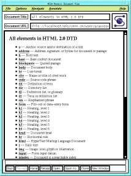
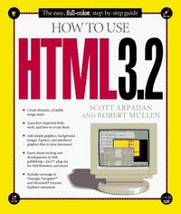
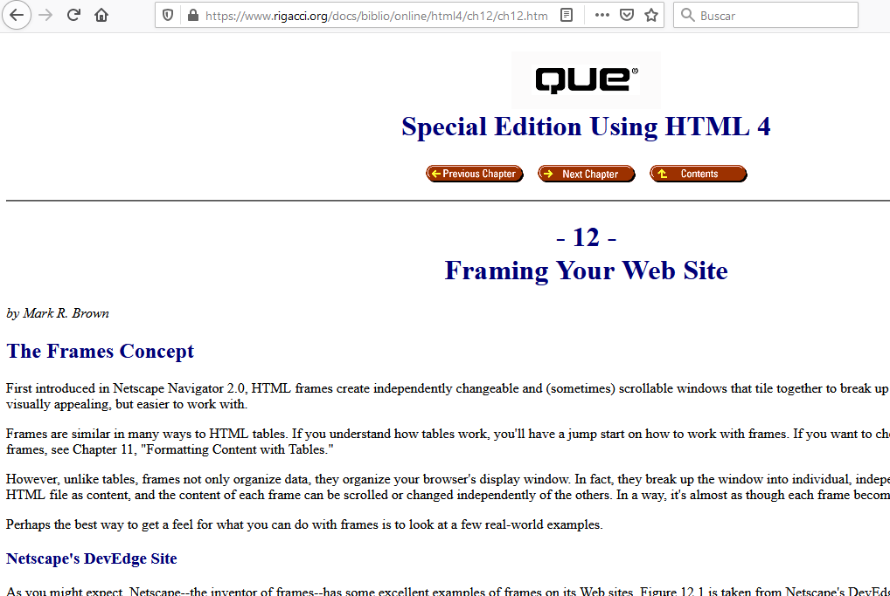
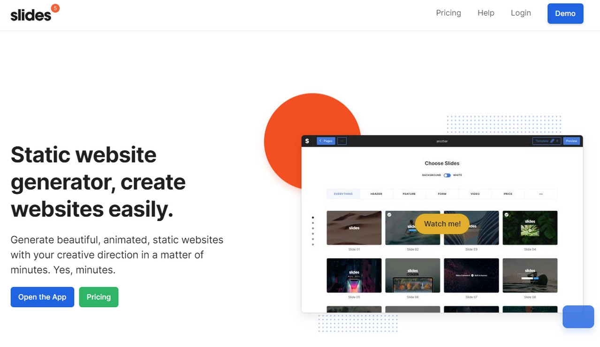

HTML 1.0 (1991)

La primera versión del lenguaje, muy básica. Permitía títulos, párrafos, listas y enlaces. Fue el inicio de la web como la conocemos.
HTML 2.0 (1995)
Introdujo formularios y tablas, lo que permitió mayor interacción y organización de datos en las páginas.
HTML 3.2 (1997)
Se añadieron scripts, soporte para applet y estilos básicos. Fue un paso hacia páginas más dinámicas.
HTML4 (1999)
Mejoró la semántica y la separación entre contenido y presentación. Se impulsó el uso de CSS y la accesibilidad.
HTML5 (2008–2014)
La versión más moderna, con soporte para video, audio, canvas y nuevas etiquetas semánticas como <header>, <article> y <footer>. Es la base de las aplicaciones web actuales.